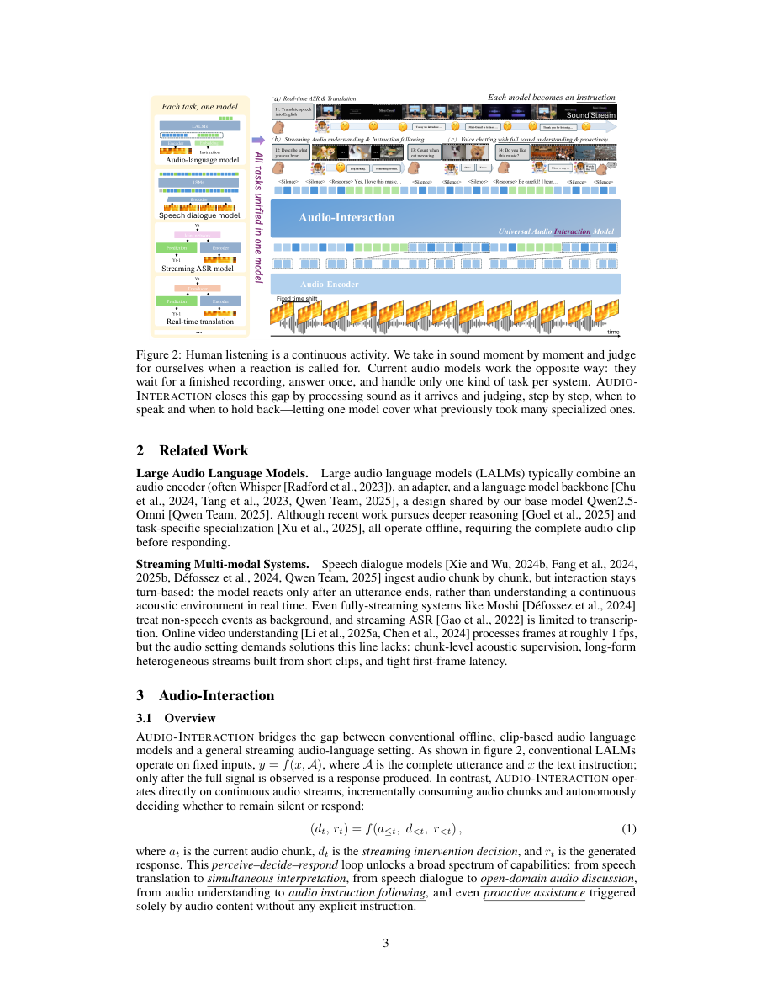

#1
★ 8/10
Audio Interaction Model
音频交互模型

图 Figure · Page 3 of paper
🎯 一个统一的实时音频交互大模型，能边听边理解边回应。
A unified always-on audio AI that listens, decides, and responds to any sound or speech in real time.
🗣️ 一句话比喻 · Plain-English Analogy就像把对讲机升级成真正的电话通话——以前的AI是"按键说话"式的，你说完它才开始处理；现在的AI像一个随时在线的朋友，一直在听，在合适的时候自然地插话回应，完全不需要你按任何按钮。Think of it like upgrading from a walkie-talkie (push a button, wait for reply) to a real phone call — the AI is always on the line, listening, and jumps in naturally when it has something useful to say, just like a friend would.
| 维度 | 中文 | English |
|---|---|---|
| ❓ 待解决 的问题 |
现有的AI音频模型就像录音机：你得先录完音、再交给它处理，没法实时对话。虽然有一些"流式"模型，但每个只能干一件事，比如只能转录文字，或者只能聊天。没有一个模型能同时听声音、理解意图，然后在合适的时机主动开口回应——就像一个真正的人类对话者那样。 | Today's AI audio models are "offline" — you hand them a finished recording and wait for an answer. Streaming models exist, but each one only does one job (like transcription OR chatting, never both). There's no single AI that can listen to live audio continuously, understand what's happening, and jump in at the right moment — the way a real conversation partner would. |
| 💡 解决 的亮点 |
• 首个将离线音频任务（如语音识别、声音识别）和在线实时语音对话统一到一个模型的系统。 • 提出"感知-决策-响应"闭环，AI能持续监听音频流，自主判断是否需要回应，真正做到"随叫随到"。 • 构建了超大规模训练数据集StreamAudio-2M（260万条样本），覆盖7大能力、28个子任务。 • 构建了新评测基准Proactive-Sound-Bench，专门测试AI是否能在恰当时机主动介入对话。 | • First unified model that handles BOTH offline audio tasks (like transcription, sound recognition) AND live, real-time voice conversations in one system. • Introduces a "perceive-decide-respond" loop — the AI constantly listens, judges whether it should reply, then speaks, just like a human listener. • Built a massive new training dataset (StreamAudio-2M, 2.6 million examples) covering 7 core audio skills and 28 sub-tasks. • Created a new benchmark (Proactive-Sound-Bench) to test whether an AI can proactively jump into a conversation at the right time. |
| 🧪 实验 内容 |
研究人员在8个基准测试上对Audio-Interaction进行了全面评估，涵盖主流音频理解任务（语音识别、音频描述、声音分类等），以及新构建的Proactive-Sound-Bench（测试主动介入能力）。对比基线包括Qwen-Audio、SALMONN、WavLLM等主流离线与流式模型。评测指标既包括传统音频任务的准确率/质量，也包括流式交互质量的新指标。 | The researchers tested Audio-Interaction across 8 benchmarks covering mainstream audio understanding tasks (speech recognition, audio captioning, sound classification, etc.) as well as the newly introduced Proactive-Sound-Bench for real-time proactive response evaluation. They compared against strong offline and streaming baselines including models like Qwen-Audio, SALMONN, and WavLLM. Evaluations measured both standard accuracy/quality on traditional audio tasks and new metrics for streaming interaction quality. |
| 📊 实验 结果 |
Audio-Interaction在全部8个基准测试上均达到与离线模型相当或更优的性能，同时解锁了离线模型完全无法实现的实时能力。在实时语音识别（ASR）上，性能与专用流式模型持平或更优；在Proactive-Sound-Bench上，离线模型得分接近零，而Audio-Interaction表现出强劲的主动介入能力；在流式音频指令跟随任务上，它是唯一能在实时场景中完成任务的模型。统一模型在保留离线任务质量的同时，新增了此前任何单一模型都无法同时具备的在线能力。 | Audio-Interaction achieves competitive or superior performance on all 8 benchmarks compared to offline models, while also unlocking entirely new real-time capabilities. On real-time ASR (automatic speech recognition), it matches or outperforms specialized streaming models. On Proactive-Sound-Bench, it demonstrates strong proactive intervention ability that offline models completely fail at (scoring near zero). On streaming audio instruction following, it is the only model capable of handling the task in a live setting. The unified model retains offline task quality while adding online capabilities no prior single model could do simultaneously. |
| 🏁 结论 | 本文证明了可以构建一个统一的AI模型，同时胜任传统音频理解任务和实时语音交互，两者质量都不打折扣。核心贡献是SoundFlow框架和StreamAudio-2M数据集，共同开创了"永远在线"音频AI的新范式。 | This paper proves it's possible to build a single AI model that handles both traditional audio understanding tasks and live, real-time voice interaction — without sacrificing quality on either. The key contribution is the SoundFlow framework and StreamAudio-2M dataset, which together enable a new class of always-on audio AI. |
| 🔗 论文 链接 |
arXiv: 2606.05121 · 📥 PDF | |
⚙️ Method · 方法详解
研究团队构建了一个名为SoundFlow的完整框架，从训练数据构建、到模型训练、到实际部署，全流程支持流式处理。模型像人一样"边听边理解"——音频一小段一小段地输入，每时每刻都在判断："现在该开口回答了吗？还是继续听？"这个判断基于语义理解，而不是简单的声音触发。在实际运行时，系统采用异步设计，听和说可以同时进行，互不阻塞，从而实现低延迟的流畅实时交互。
The team built a framework called SoundFlow that works end-to-end — from collecting streaming training data, to teaching the model when to stay quiet vs. when to talk, to running the final system with low delay. The model processes audio in small chunks as it arrives (like reading one word at a time instead of a whole page), and at each moment decides: "Should I respond now, or keep listening?" This decision is driven by meaning — the model understands context, not just sound patterns. At inference time, the system uses an asynchronous design so listening and responding happen in parallel without blocking each other, keeping latency low for smooth real-time interaction.
📐 Key Formulas · 关键公式
\[\text{perceive} \rightarrow \text{decide} \rightarrow \text{respond} \circlearrowleft\]
💡 感知-决策-响应闭环：模型持续监听音频（感知），判断是否需要回应（决策），然后生成回复（响应），循环往复，实现实时交互。
The core loop of the system: the model continuously perceives incoming audio, decides whether a response is needed based on meaning, then responds — and repeats this cycle in real time.
🌟 Why It Matters · 为什么重要
这项研究让AI语音助手距离真正的"对话伙伴"更近了一步——能持续倾听、理解语境、在恰当时机主动开口，无论你在说话、播音乐还是处于嘈杂环境中。它有望推动更智能的语音助手、实时翻译耳机、听障辅助工具等应用的落地。
This research moves us closer to AI assistants that work like real conversation partners — always listening, understanding context, and speaking up at exactly the right moment, whether you're talking, playing music, or in a noisy environment. It could power smarter voice assistants, real-time translation earbuds, accessibility tools for the hearing-impaired, and much more.